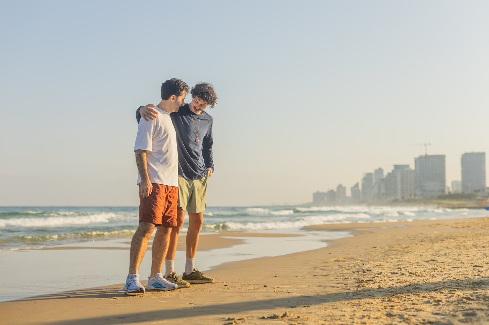

Мужское комьюнити Никиты Смелянского
Живи как ты.
Между жизнью, которой ты живёшь,
и жизнью, которой хочешь жить,
есть расстояние.
Мы помогаем его сократить.
Мужское комьюнити Никиты Смелянского
Между жизнью, которой ты живёшь,
и жизнью, которой хочешь жить,
есть расстояние.
Мы помогаем его сократить.
Для кого
Взрослый мужчина имеет привилегию выбирать.
Но свобода выбирать ещё не означает, что мы выбираем.
Страх, привычка, обязательства, чужие ожидания и расфокус постепенно создают расстояние между жизнью, которую мы хотим, и жизнью, которой живём.
Что это
Мы не соревнуемся, кто выше. Мы помогаем друг другу прыгнуть выше.
Когда рядом с тобой мужчина решается на то, на что давно не решался, его движение даёт импульс тебе. Ты делаешь свой шаг — и даёшь импульс следующему.
Не потому, что кто-то знает, как тебе правильно жить. А потому, что иногда нужны другие мужчины рядом, чтобы начать жить так, как ты уже давно хочешь.

Как это устроено
Monthly
Большой эфир: открываем тему, на которую смотрим весь месяц, и разбираем инструменты, которые внедряем в жизнь.
Weekly
Настраиваемся на неделю: с чем в неё входишь и что сделаешь до следующей встречи.
Ongoing
Совместные путешествия, бадди, встречи в своих городах.

Кто ведёт
Никита Смелянский
Не гуру и не учитель. Никита живёт свою жизнь — и принимает непопулярные решения просто потому, что так чувствует. Уехал жить в пустыню, строит дело по своим правилам, растит дочь.
Вместе с женой они перенесли рабочие инструменты — цели, ритм, регулярный взгляд со стороны — на саму жизнь и на отношения. Так и появились weekly и monthly. Это работает в его собственной жизни, поэтому он делится этими инструментами с другими мужчинами.
Фасилитатор мужских кругов от ManKind Project, коуч ICF и сертифицированный гид. Больше ста проведённых кругов и подкаст «Мужской синдром».
Что говорят мужчины

Наши встречи создают среду, в которой я ощущаю свою пустоту. И это мотивирует заполнять её.
Я научился глубже смотреть на свою жизнь и говорить о том, о чём раньше не задумывался.
Это именно то, чего мне не хватало. Если хочешь понять себя как мужчину в XXI веке — попробуй.
Вопросы
Нет. Это среда, а не лечение, и Никита не терапевт. Здесь никого не чинят: мужчина сам смотрит на свою жизнь, а рядом есть те, кто смотрит на свою.
Нет. Можно прийти и слушать. Участие бывает разной глубины: сегодня сказал, в следующий раз просто побыл рядом.
Ничего страшного. После каждого эфира остаётся саммари: о чём говорили, к чему пришли, какие инструменты разбирали. Они собраны не по датам, а по темам — страх, деньги, отношения, тело.
Нет. Это не волшебная таблетка. Среда даёт импульс, регулярность и мужчин рядом, но шаги делаешь ты сам. Если работать — меняется. Если только слушать — нет.
Нет. Речь не про чужие представления об успехе, а про твою собственную картинку того, как ты хочешь жить. У каждого она своя, и никто здесь не знает её лучше тебя.
Именно так большинство и приходит. Не потому что плохо, а потому что мало просто хорошо.

Живи как ты.
Из «я хочу» — в «я так живу».
Старт осеннего сезона 5 октября · сейчас предзапись
Live
$55в месяц
Live Plus
$129в месяц
Старт осеннего сезона 5 октября — сейчас идёт предзапись, 1 октября пришлём ссылку на оплату всем, кто оставил заявку. В круге шесть человек и постоянный состав, поэтому мест ровно столько, сколько кругов Никита успевает вести лично.
Не уверен? Запись на бесплатную пробную встречу — по понедельникам, 9:00 (GMT+3).
 Full Moon Hike
Full Moon Hike Ханг под землёй
Ханг под землёй Ретрит в Эйлате
Ретрит в Эйлате